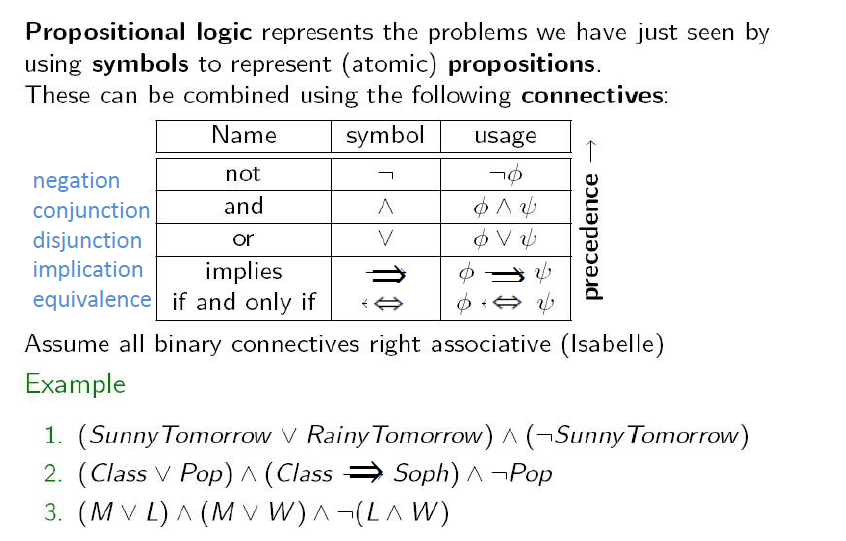
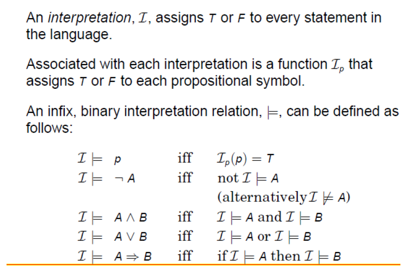
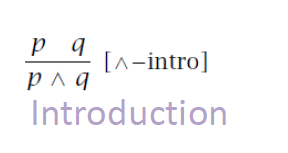

Propositional logic and FOL
Propositional logic precedence

Well-formed propositional formulare
→ (⇒) implication
⇒
Interpretation

Connectives
Validity (tautology)
Satisfaction
Inference Rule
Introduction
How can I derive A*B

Elimination
What can i derive from A*B
Axioms
Inference Rule
Modus Ponens
A simple Proof System
Conjunction Elimination
Disjunction Elimination
Natural Deduction
Rules for Implication
Modus Tollens
First Order or Predicate Logic
Quantifiers
∀
For all
∃
There exists
Free and Bound Variables
Interpretation
- Informally, an interpretation of a formula maps it function letters to actual functions, and its prediate symbols to actual predicates
- The interpretation also specifies some domain D (a non-empty set or universe) on which the functions and relations are defined.
- A formal definition requires some work
Definition